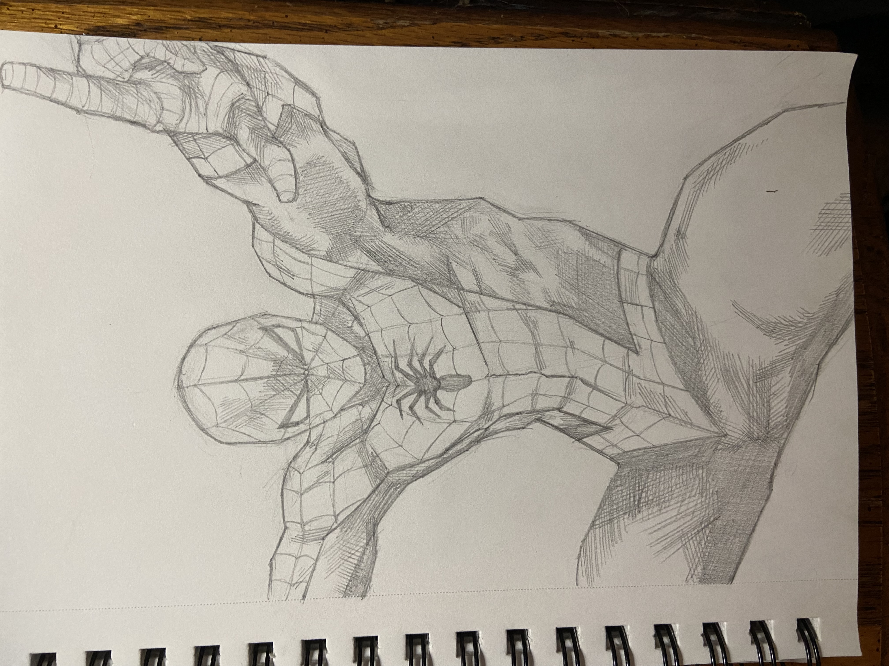
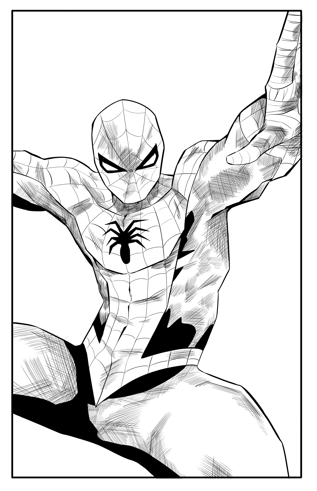
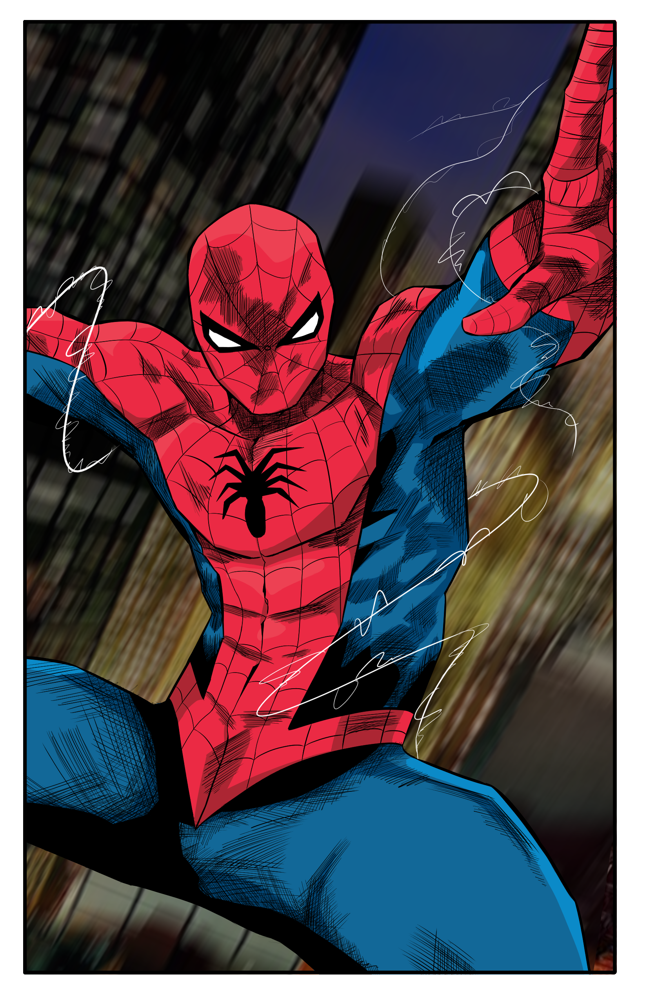

Posts about things I like for MI349
By Grant Bossio
I've been into drawing/sketching ever since I was a kid. When I was really little, my parents would always buy me see-through sketching paper so I could trace over the characters in books that I had. For a while I, around middle school, I stopped drawing all together. During my Freshman year of high school I casually picked it back up trying to improve on my actual skills. I enrolled in some "Intro to Drawing" classes during my sophomore year and starting drawing more often in my free time. Since then, I draw whenever I get the chance and/or inspiration. I feel that since then my skills have improved pretty nicely. However, I still have a lot of room to get better. I tend to just stick to sketching and drawing as being colorblind makes the act of working with colors and lighting relatively difficult. Although, recently I have been experimenting with colors in some of the things I'm working on. I'm getting better at lighting too, but depending on the shade of both the light and the shadows, it can get pretty difficult so I tend to stick to grayscale color and lighting. Below are some pictures of my most recent project. They show the process that I went through to reach the final product. To start I drew the sketch, then digitally lined it, and then colored it digitally as well.
  By Grant Bossio
Another thing I've been interested in for as long as I can remember is computers. Specifically I'm more interested in the software side of things though. I've always liked to play video games to relax so when I learned that I could code my own I was instantly intrigued. I started off simple with the basics of python through tutorial on YouTube. Eventually I started working with actual game development software like Unity. Unity is a game engine that many companies in the industry use professionally. However, it is also open for people to use on their own indie projects. I've used it for a few personal projects, but not too many (which is something that I want to try and do more often), along with for a few projects through the courses I've taken here. But, my interest isn't just in software. I like working on computers too. During the pandemic, with the help of a friend, I bought the necessary parts and built my own computer. I also tend to be the one my friends come to when it comes to computer issues. And, since I've built my own PC, I've helped my girlfriend build hers a few summers ago and helped a cousin build his last summer. And, hopefully in the near future, I'm looking into building a new computer once I graduate from school. Pictured below is my laptop that I use for work, game/software development, and to play games with my friends to relax. I also use it to draw from time to time with a tablet that I have that I hook up to the computer which lets me draw with a stylus.
| Type of Computer | Type of Work | Model Year |
|---|---|---|
| Toshiba Laptop | Hard Drive Transfer | 2008 |
| Dell Inspirion Laptop | Hard Drive Transfer, Power Switch Board Replacement | 2014 |
| Dell Inspirion Laptop | Windows Replacement | 2016 |
| Personal Computer | Built PC, Installed Windows, Installed GPU and Motherboard Drivers | 2020 |
| ROG Zephyrus Laptop | Registry Edit in Order to Improve Battery Life and System Functionality | 2022 |